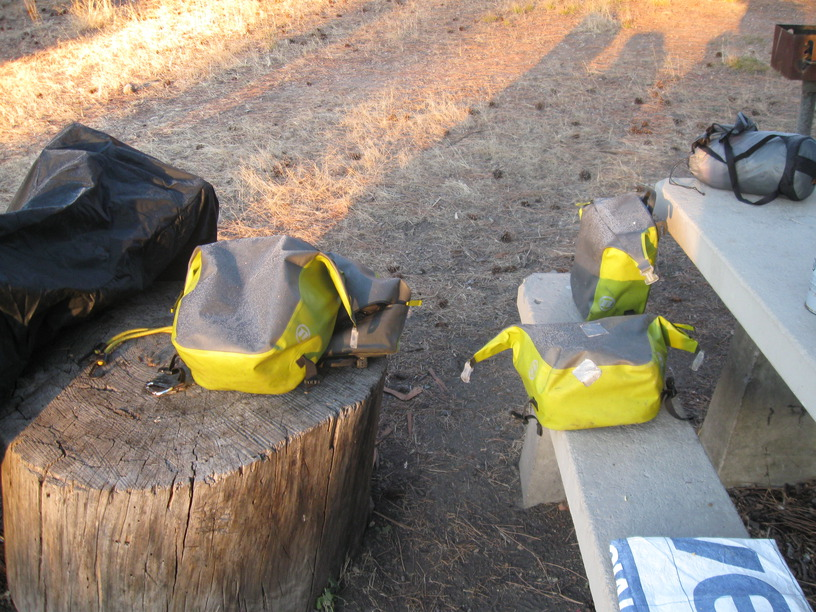
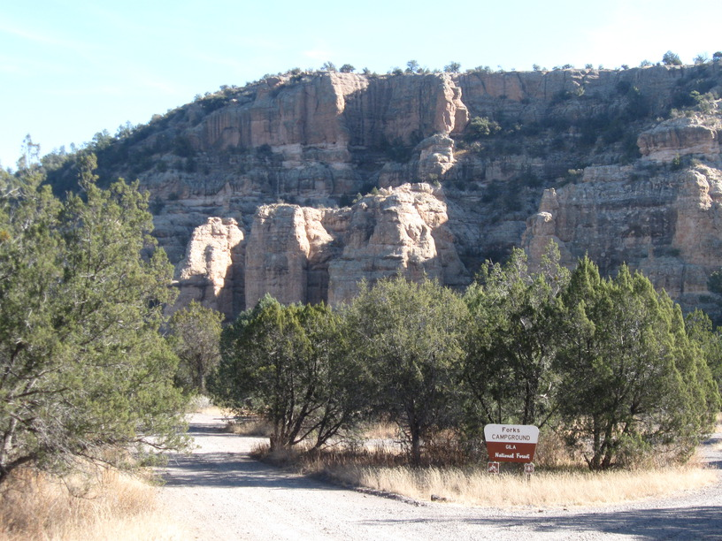
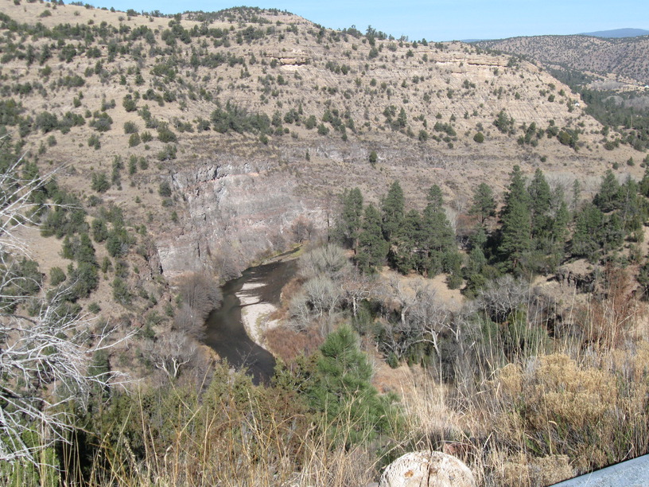
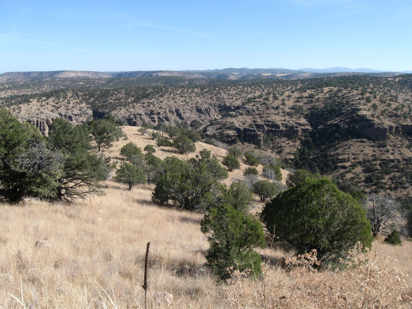
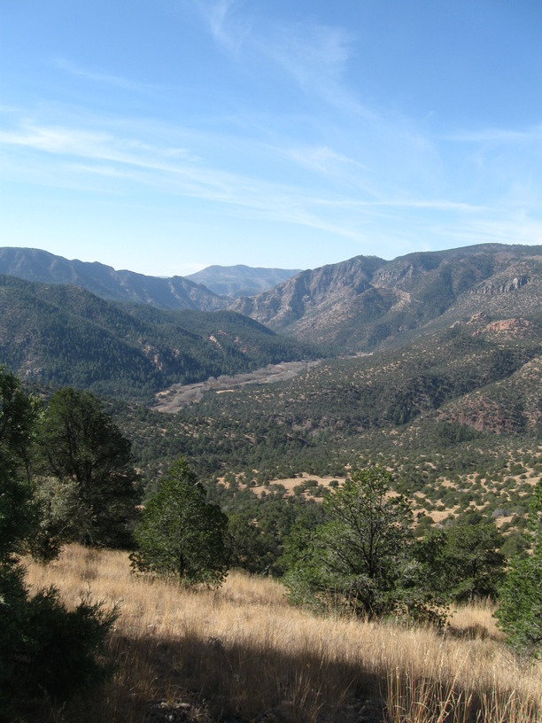
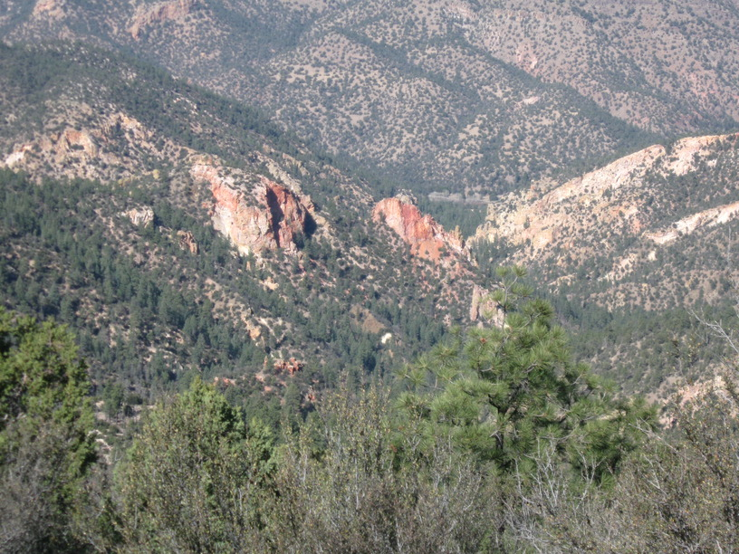
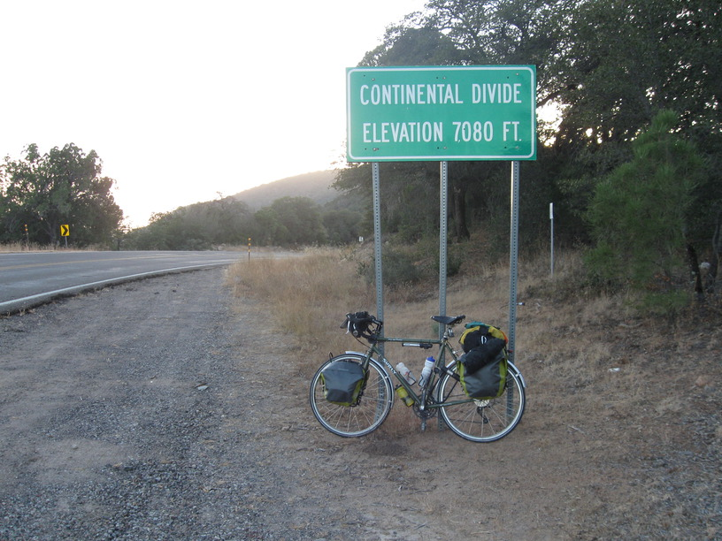

21 Nov 2008, Silver City, NM
Today I climbed all day. At least that's how it felt. The climb out of the Gila River Valley was probably the hardest climb of the trip. At the top I stopped at the overlook for a minute & met a nice British couple who were traveling through the West in a rental RV. We saw a bald eagle & ironically they had to identify it for me. The afternoon climb was easier, but I was pretty sick of climbing at that point.
I did enjoy a geothermal shower this AM & I met Dave (who told me about the shower) at lunch by coincidence. He & his wife Bobbi are from Colorado & volunteer at the Cliff Dwellings. They were good company at lunch—along with another volunteer.
Staying in a hotel tonight. Warm Showers didn't work out for me, but I wanted a warm bed & laundry, so I'm doing it the expensive way. I got calls from Grandmommmy and Granddaddy and Uncle Tom & I talked to Kim awhile, so that was nice.






